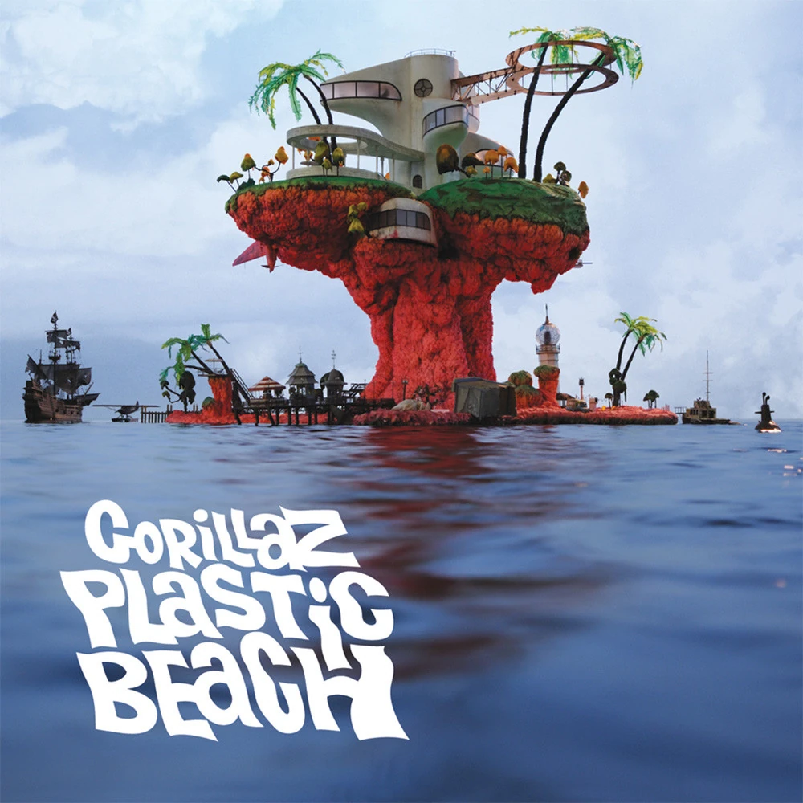

Gorillaz - Plastic Beach Day

Plastic Beach es el tercer álbum de estudio de la banda británica virtual Gorillaz, lanzado el 3 de marzo de 2010 por Parlophone internacionalmente y por Virgin Records en Estados Unidos.

Plastic Beach es el tercer álbum de estudio de la banda británica virtual Gorillaz, lanzado el 3 de marzo de 2010 por Parlophone internacionalmente y por Virgin Records en Estados Unidos.

HOME es el segundo álbum de estudio de SIAMÉS. El álbum fue anunciado originalmente bajo el título MOTHER ROBOT en Instagram, antes de someterse a un aparente cambio de título con el lanzamiento de “No Lullaby” a finales de noviembre de 2019.

Hot Fuss es el álbum debut de estudio de la banda estadounidense de rock The Killers, lanzado el 7 de junio de 2004 en el Reino Unido y el 15 de junio de 2004 en Estados Unidos por Island Records. La música del álbum está mayormente influenciada por la new wave y el post-punk. Hot Fuss dio lugar a cuatro singles de éxito tanto crítico como comercial: "Mr. Brightside", "Somebody Told Me", "All These Things That I've Done" y "Smile Like You Mean It".